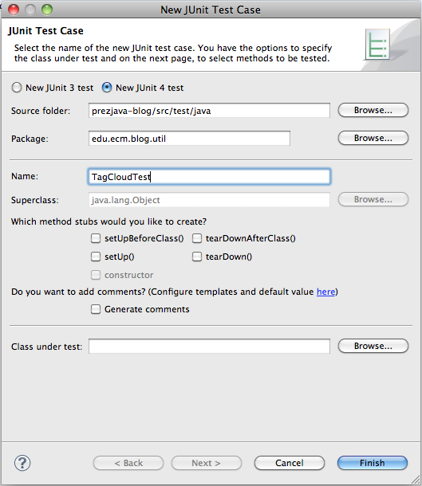

JUnit est une librairie pour les tests unitaires créée par Kent Beck et Erich Gamma.
Elle permet d'écrire simplement des tests unitaires qui valide le fonctionnement du code qui ira par la suite en production.
public class PersonTest {
@Test
public void fullname() {
Person person = new Person("John", "Doe");
Assert.assertEquals("fullname is incorrect", person.getFullname(), "John Doe");
}
}
Elle est d'autant plus intéressant lorsqu'elle est utilisée comme outils d'aide à la conception.
Nous allons partir du projet maven qui a été généré dans le tp maven et stoqué sous github
Ce projet ne contient pas grand chose pour le moment mais il dispose au moins d'une structure de répertoires.
Après un mvn eclipse:eclipse, on importe ce projet sous eclipse.
Il est recommandé de faire des commits git et des pushs aussi souvent que nécessaire.
Avant de commencer à décrire ce que l'on veut faire, nous allons mettre à jour la version de junit utilisér dans le pom.xml
<dependency> <groupId>junit</groupId> <artifactId>junit</artifactId> <version>4.8.2</version> <scope>test</scope> </dependency>
La version 4 de junit supporte les annotations qui permettent d'écrire les test plus simplement.
On regénère ensuite le projet avec mvn eclipse:eclipse et on rafraîchit le projet sous eclipse afin que cette modification soit bien prise en compte par eclipse.
Nous allons ajouter une classe TagCloud dans le package edu.ecm.blog.util
public class TagCloud {
}
Cette classe nous servira plus tard lorsque nous constuirons notre application web.
Voici ce que nous voudrions qu'elle fasse pour le moment :
Nous allons rajouter tout cela en passant par des tests unitaires.
Par convention, une classe de test porte le nom de la classé testée, suffixée par "Test".
On ajoute le test JUnit (New > JUnit Test Case) TagCloudTest dans le package edu.ecm.blog.util mais coté sources de test.
